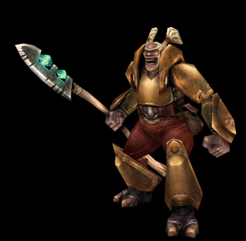
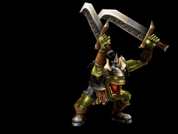

Назад
Содержание
Вперед
Balork

Демиурги: Хаоты
Наконец-то случилось - и на экране монитора я наблюдаю не скриншоты и деморолики, а полновесный вступительный ролик к столь долгожданной игре. Знаете ли Вы, что такое самопроизвольно возникающая симпатия? Наверняка знаете. Вот поэтому, когда передо мной встал вопрос о выборе кампании, я, ни на секунду не задумываясь, выбрал кампанию "Железного кулака", или, говоря простым народным языком, - "Плохих парней". И не потому, что такой гад и ненавижу "Хороших", нет - просто возникла самопроизвольная симпатия.
Итак Хаоты. Больше всего они похожи на полуорков-полуогров, закованных в тяжелую и крепкую кожаную или металлическую броню, которая ни от чего не защищает, как впрочем и их экстравагантные ездовые "лошади", больше напоминающие получерепах-броненосцев или хищных кенгуру (второй вариант "лошади" - более подвижный по-моему ). Вооружены обычно какой-нибудь палкой-посохом с кристаллом на конце, которой выразительно машут при вызове того или иного Spell'a и джентельментским набором заклинаний самого простейшего уровня и свойства. И вот из этого рубахи-парня Вы должны слепить ("из того что было") своего непобедимого Конана-варвара и доказать всему Миру кто есть кто.
Довольно увлекательно смотреть как этот "шкаф" отмечает выигранный бой. Если победный прыжок-пирует Кинетов вызывает белую зависть и восхищение, то когда после очередной выигранной дуэли воинственный Хаот бьет себя кулаком в грудь а-ля Кинг-Конг и что-то там орет на своем тарабарском, то тебя наполняет чувство абсолютной уверенности в непобедимости: так и хочется тоже что-нибудь прокричать вместе со своим другом (боюсь родные не поймут). И тут есть своя причина. Я думаю, что если бы какой-нибудь здоровяк сподобился при своей массе на пирует, то он либо проломил бы землю, либо разработчикам пришлось бы ввести в игру дополнительный нейтральный юнит - карету скорой помощи, чтобы увезти бедолагу в замок с многочисленными переломами и ушибами. Достаточно того, что некоторые из них после Victory не только кричат, но и в порыве заслуженной радости яростно сотрясают почву ударами своего посоха (и почва действительно сотрясается, это не просто слова). Ну, с внешним обликом и отчасти характером я думаю мы разобрались. Переходим к навыкам.
Проиграв (в смысле не "потерпев поражение", а "пройдя") где-то половину кампании, я понял - процентов на 70 удачный исход битвы зависит от специализации твоего парня и от удачно подобранных умений (тут конечно как повезет и что предложат на выбор). Специализация в Демиургах играет большую роль, чем даже в Героях M&M. Самый удачный вариант у меня был следующий (к сожалению не помню как звали Героя, помню только, что пола "М", три пальца на "руке" и очень "симпатичный"): специализация - "При вызове заклинания Герой имеет шанс оставить его в руке" (круто - это не сохранить Руну, а истратить ее, но заклинание оставить в руке), набор умений: "Удача", "Регенерация", "Медитация", "Живучесть" и еще пара каких-то менее важных. Тактика в моем случае была очень проста: делаем этого героя Убийцей, прогоняем его по всем наставникам-учителям, только им уничтожаем всех близлежащих монстров (опыт!!!) и далее идем уничтожать недругов. На начальном этапе - это когда у тебя только простейшие заклинания - получалось круто: главное выждать паузу, когда приток эфира будет порядка 3-4 единиц: далее противника можно вынести одним "Электрошоком" (бывало 5 раз подряд - с руки заклинание не уходит), или за раз вызываешь штук 5 "Вонючих крыс", или на одну постоянно вешаешь "Боевой дух" - и она из "Вонючей крысы" становится "Крысиным Терминатором". Что - Руны расходуются?: не беда - почаще в порталы заходим, благо их в принципе хватает, не надо бегать на другой конец карты. Вариантов много - лишь бы эфир не заканчивался. В дальнейшем тактика такая же, только заклинания дороже по эфиру. И тут главное скастовать "Вулкан" (можно и пару раз), добавить себе Эфирных каналов и далее по накатанной дорожке. Обороняться Хаотами не то что невозможно, просто не выгодно (хотя конечно это сугубо мое мнение, и кто-то играет ими от обороны): что Крысы, что Орки, что Летучие Мыши - все хороши в нападении, при этом достаточно дешевы. Исключение составляют Кобольды: тут немного другая тактика - пяток Кобольдов-Шаманов (по 1 ед. эфира - читай ДАРОМ), пара-тройка Старейшин и Телохранители (эти для защиты Героя) - против такой братии мало кто устоит: за фазу атаки наносится 10-15 единиц урона: стреляем Шаманами, а Старейшинами их потом опять поднимаем, опять стреляем, опять поднимаем (вечный цикл ). Немного нудновато - но дешево, сердито и практично. Таким способом я выносил самую неприятную тварь в игре (на мой взгляд) - "Ходячий ужас". Очень жаль, что Герои от миссии к миссии не переносятся: только успеваешь к этим балбесам привыкнуть, а тут бац - вторая смена, Победа то есть, и опять начинаешь любимчика вынашивать (мне, кстати, этот Герой ни разу больше не попался).
Немного о магии Хаотов вообще. Как я уже говорил, магия Хаотов в большинстве своем атакующая. Орки - сильные парни с неплохой атакой/защитой, если в их компании есть Воин, то получают первый удар и атака у всех Орков увеличивается на единицу. Летучие мыши - этим сам Бог велел атаковать - каждая при атаке может украсть из руки противника одно заклинание и тот остается ни с чем; а Вампирам так и летать не надо - за принудительный отдых они просто забирают жизнь у врага (по 1 очку за каждую мышь на поле битвы) и передают ее хозяину. Всевозможные Крысы - берут числом, могут возвращать друг друга из могильника, хороши на начальной стадии или при соответствующей специализации Героя, например, "Любая крыса может уцелеть при физической атаке, несмотря на нанесенный ей урон". Про Кобольдов я уже говорил - дешевые парни с дистанционной атакой. Очень неплох телохранитель Стена Лавы - в фазе Защиты, заплатив N-единиц эфира, можно поднять ей атаку на N-пунктов, и в обратку она вдарит так, что мало не покажется. Из магии чар и колдовства хочется отметить "Вулкан" (дает 3 эфирных канала), "Боевой дух" (+1 к атаке и защите), "Разлом" (уничтожает указанное создание, не Героя). Вообщем заклинаний действительно вагон и маленькая тележка, простора для изобретения тактик и стратегий море, можете смело задвинуть все что я здесь изложил и начать с нуля (даже так и надо сделать - интереснее будет).
Я уверен, что и других Рас есть свои сильные и слабые стороны (про слабые Хаотов я тактично промолчу - ну нравятся мне эти парни), их тактика может быть даже лучше, красивее и надежней: как говорится - все в твоих руках.
Особенно хочется поблагодарить разработчиков за художественное оформление магии, да и игры в целом. Графика в игре просто отличная - каждое заклинание имеет свой графический эффект, причем неповторимый; голосовую поддержку Героя, которая вызывает мелкую дрожь (не знаю пока как у других рас); дополнительные полезные свойства, не у всех, но многих. И, надо сказать, даже на моей средней машине (Celeron-400, 128 Ram, 32M Riva TNT2 M64) все это смотрится очень и очень прилично и не тормозит. Большое спасибо фирме Nival.
Напоследок хочется сказать, что играть против компьютера это одно, а против Человека - совсем другое. Поэтому, кто еще не купил себе "Демиургов" - смело идите в магазин: не пожалеете; а кто уже купил и играет - вперед на просторы Интернета доказывать свою правоту. Игра удалась, это по-моему без вопросов, есть маленькие замечания, но они настолько маленькие, что их практически не видно (по крайней мере они не заставляют стучать кулаком по монитору и нецензурно выражаться). И, может быть, я выражу тайную надежду всех поклонников "Демиургов", задав вопрос (для меня чисто риторический) - а продолжение будет?

Назад
Содержание
Вперед